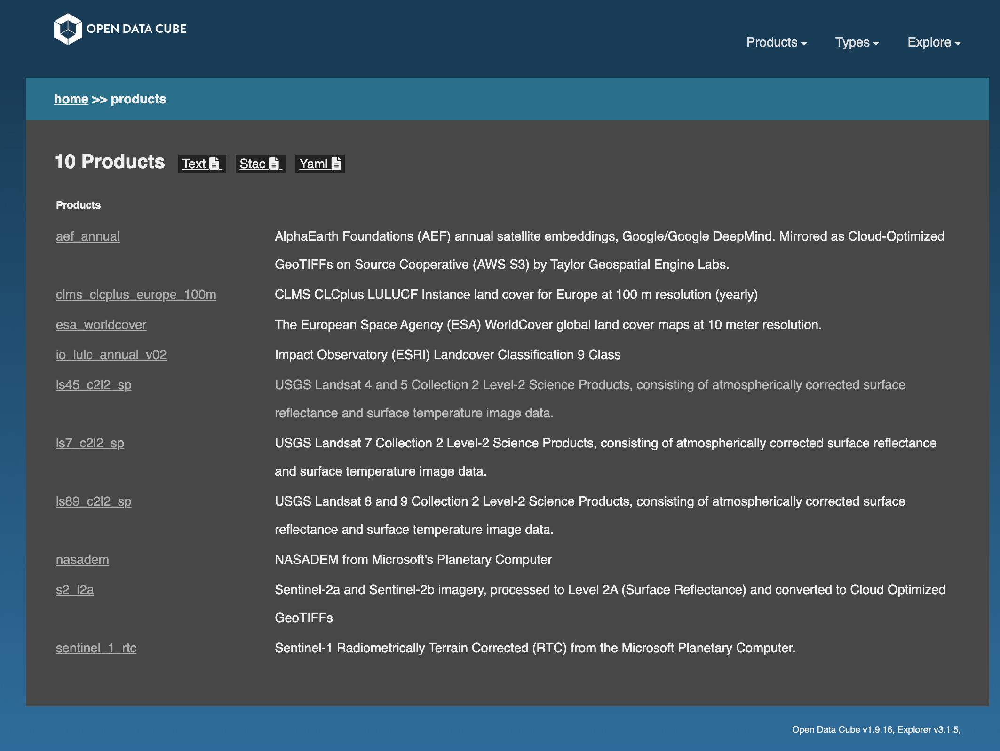
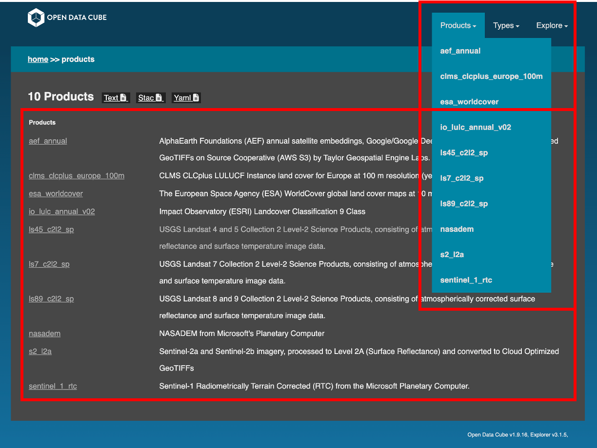
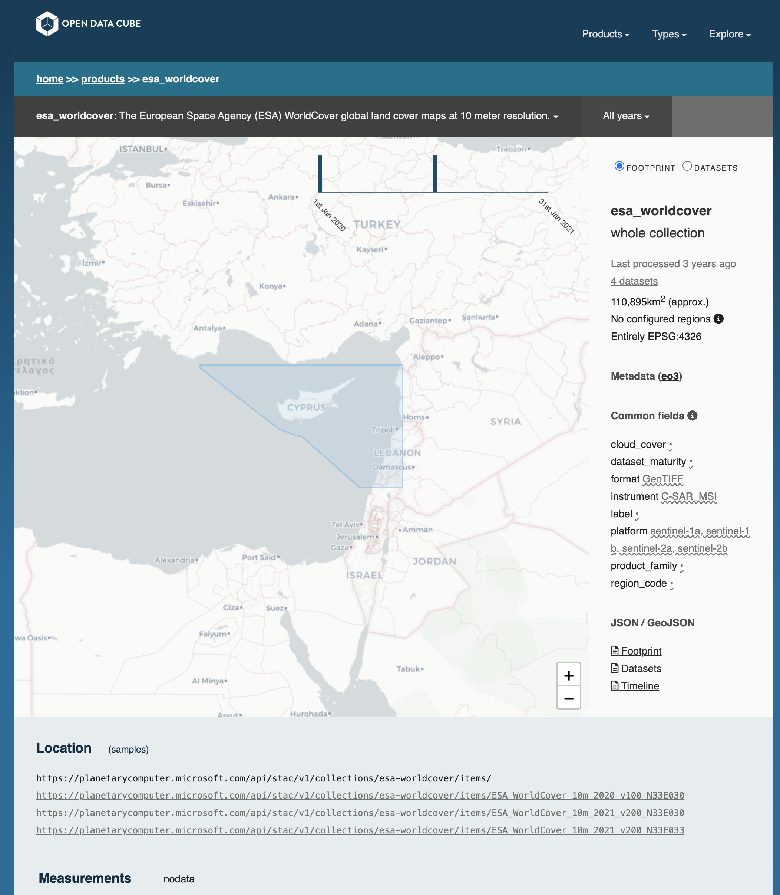
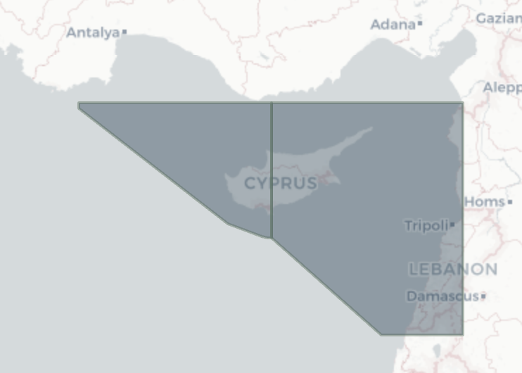
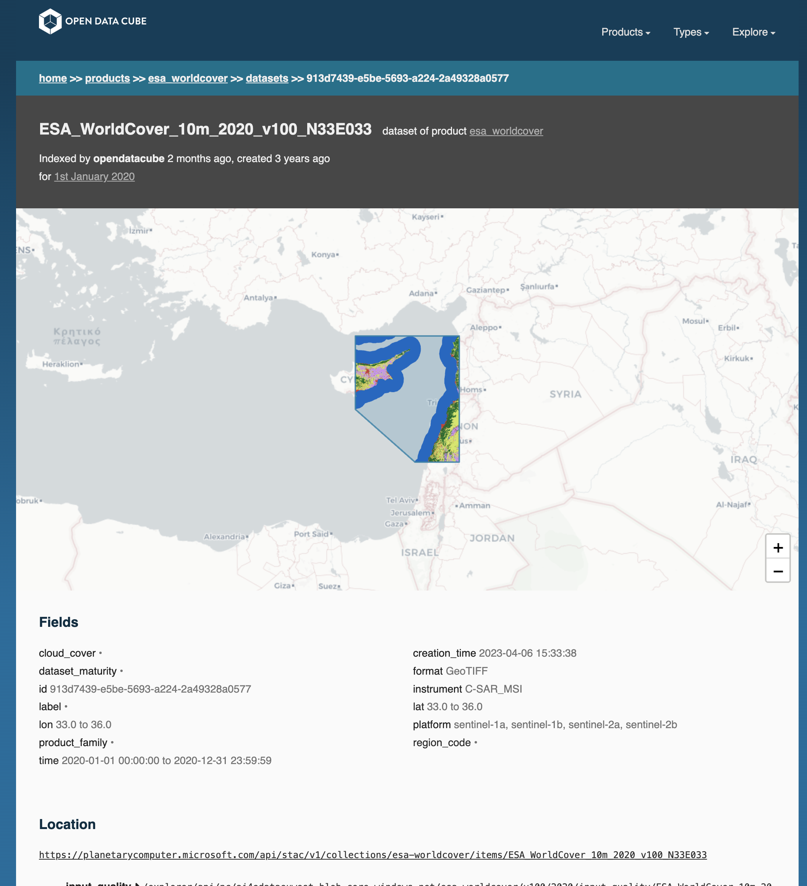
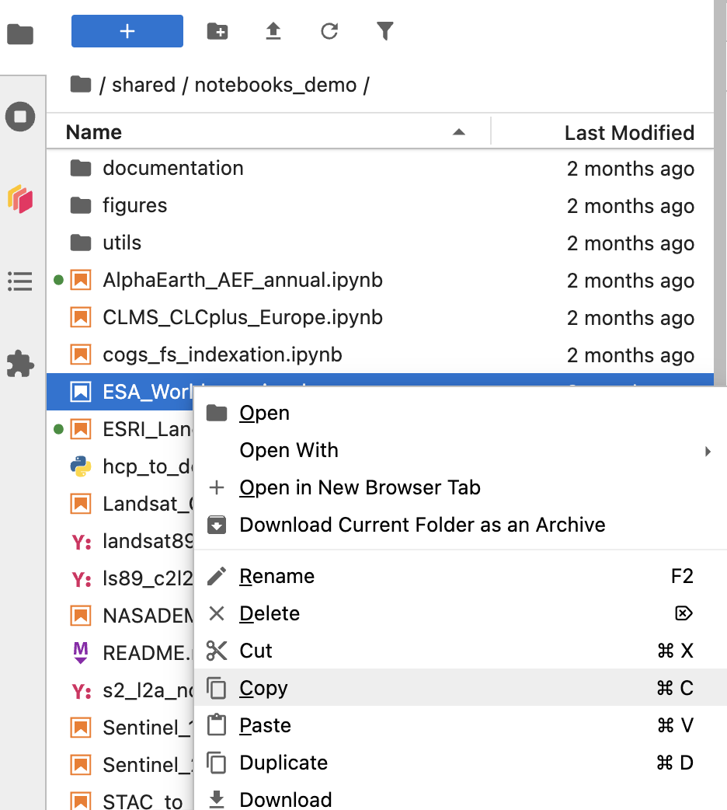
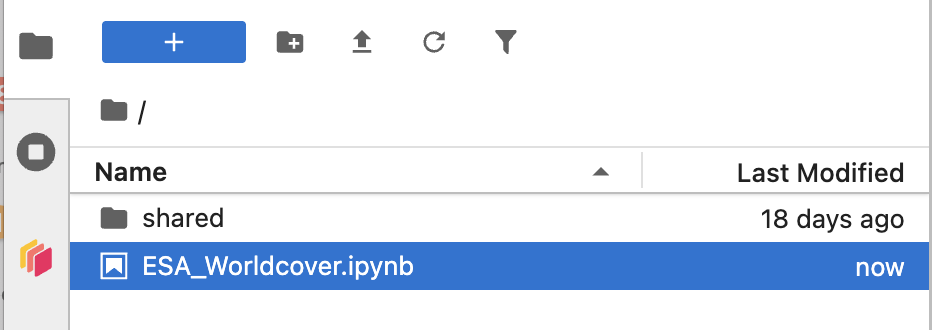
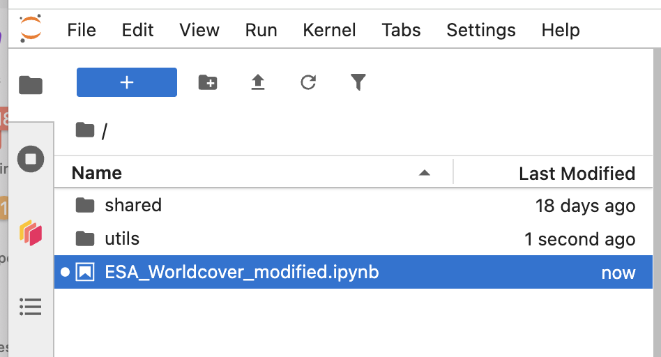

Nostradamus datacube use
Several instances of cube-in-a-box have been deployed in the frame of the Nostradamus project, following the usual cube-in-a-box installation procedure :
In order to describe how to use one of the installed Nostradamus datacubes, the example of the Cyprus one will be taken.
Accessing an existing datacube
When clicking on an existing datacube instance (e.g. Cyprus), you will automatically be re-directed to the explorer part of this datacube by default (https://cyprus-dc.nostradamus-platform.eu/explorer).

The datacube explorer part
The explorer part of the datacube is the Graphical User Interface, that allows to see the content and download data.
Products
In the datacube explorer part, the available products (data sources installed for the Nostradamus project) are displayed in the default page and correspond to the “Products” menu.

Clicking on one of the products (e.g. “esa_worldcover” in the screenshot below) will open a new page containing all relevant information about the dataset:

Years available in a dropdown list: the years (and months when a year is selected) of data availability for the product selected in the datacube, can be selected. By default it is set on “All”
Footprint or Datasets switch:
Footprint: it shows on the map the total fooprint of the datasets
Datasets: it shows individually each dataset’s footprint; in the case of Cyprus, two footprint extents are available

When clicking on one dataset, it opens a new page specific to the dataset in question containing a thumbnail, metadata, various links for accessing it. The link “map” in the “location” section allows to download the geotiff.

Types
The “Types” dropdown menu correspond to the metadata types, that describe the structure of the YAML/JSON document accompanying each dataset. The following types area available:
eo: Legacy Earth Observation metadata format from early ODC versions, with deeply nested fields and full source-dataset lineage embedded in each document. Superseded by eo3 and no longer recommended for new products.
eo3: Current STAC-inspired metadata format with flat properties, an explicit CRS and geometry, and lineage referenced by dataset ID. It is the standard, fully supported format since datacube-core 1.9.
telemetry: Metadata format for raw (level-0) satellite downlink data, describing acquisitions by satellite, sensor, orbit, ground station and pass times. It has no spatial grid for raster loading and is now obsolete.
=> the eo3 type should then be preferred
Explore
The “Explore” dropdown menu gives access to the following functionalities:
Recently added: it displays the available products by de-chronological order of addition into the datacube
Storage: it lists the stored products in the datacube and allows to access them directly through hyperlinks
Metadata issues: it is an audit tool that flags products whose dataset metadata Explorer can’t fully use, such as missing or invalid footprints, CRS, dates or summaries, so these can be fixed and re-indexed.
Products overview: it lists every product indexed in the datacube with its key details, such as license type, default CRS and default resolution, giving a quick summary of what the cube contains.
Dataset counts: it is an audit view that shows the raw number of indexed datasets per product, broken down by period (e.g. year and month)
About explorer: it describes the Explorer instance and lists the URLs for downloading its products, metadata types and dataset documents, along with its APIs (footprints, regions, datasets, STAC) and the CSV/text versions of its audit pages.
The Jupyter notebooks part
The goal for the Nostradamus third parties developers is to use the Jupyter notebooks part of the data cubes to develop their own notebooks.
Use of existing notebooks
The existing demo notebooks are all contained in the /shared/notebooks_demo/ folder. For an overview of the way to use the notebooks, look at the section “Exploring the demo notebooks” of the How to use an Open Data Cube page.
In order to develop your own notebook based on an existing one, copy the one of interest to the root directory first (or shared personal directory), which will allow you to edit and save it. To do so, right click on the notebook of interest and its dependencies (folders documentation, figures, utils) in the “notebooks_demo” folder and paste it at the root directory or your own folder.


